专题02 数轴上的行程问题的五种模型

目录
题型一：数轴上的行程问题之相遇问题 1
题型二：数轴上的行程问题之相距问题 4
题型三：数轴上的行程问题之三点中点问题 9
题型四：数轴上的行程问题之新定义型问题 16
题型五：数轴上的行程问题之折线数轴问题 23

题型一：数轴上的行程问题之相遇问题
1．（24-25七年级上·河南驻马店·阶段练习）如图，A、B分别为数轴上的两点，A点对应的数为 ，B点对应的数为55，现有一动点P以6个单位/秒的速度从B点出发，同时另一动点Q恰好以4个单位/秒的速度从A点出发：
，B点对应的数为55，现有一动点P以6个单位/秒的速度从B点出发，同时另一动点Q恰好以4个单位/秒的速度从A点出发：

(1)若P向左运动，同时Q向右运动，在数轴上的C点相遇，求C点对应的数．
(2)若P向左运动，同时Q向左运动，在数轴上的D点相遇，求D点对应的数．
(3)若P向左运动，同时Q向右运动，当P与Q之间的距离为20个单位长度时，求此时Q点所对应的数．
【答案】(1)19
(2)
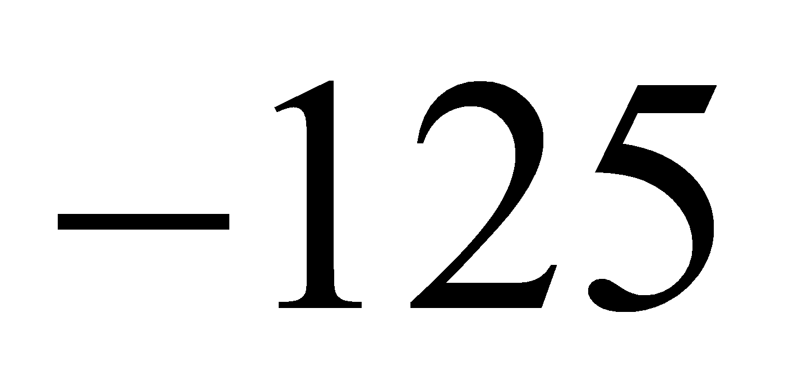
(3)11或27
【分析】本题主要考查了数轴上的动点问题，考查数轴表示数的意义和方法，相遇问题、追及问题的数量关系及应用，列方程求出相应的时间是解决问题的关键．
（1）设出运动时间为x秒，根据P点运动的路程 Q点运动的路程
Q点运动的路程 A、B两点之间的距离列方程求出相遇时间，进而求出点C所对应的数；
A、B两点之间的距离列方程求出相遇时间，进而求出点C所对应的数；
（2）设出运动时间为y秒，根据P点运动的路程 Q点运动的路程A、B两点之间的距离列方程求出追及时间，进而求出点D所表示的数；
Q点运动的路程A、B两点之间的距离列方程求出追及时间，进而求出点D所表示的数；
（3）分两种情况，相遇前 为20，和相遇后为20分别进行解答即可．
为20，和相遇后为20分别进行解答即可．
【详解】（1）解：设运动时间为x秒，
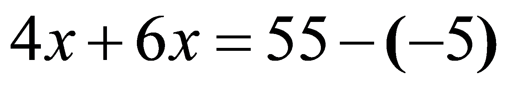
，解得： ，
，
因此C点对应的数为
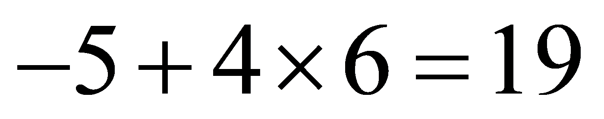
；（2）解：设运动时间为y秒，
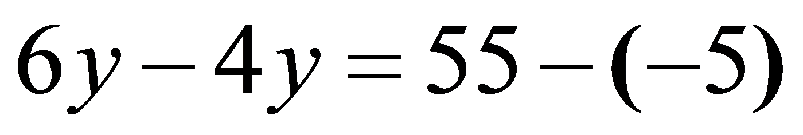
，解得：
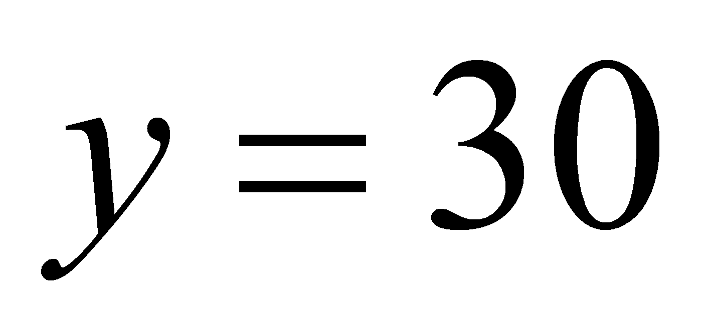
，点D对应的数为
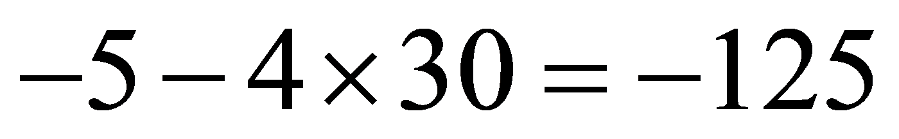
；（3）解：①相遇前
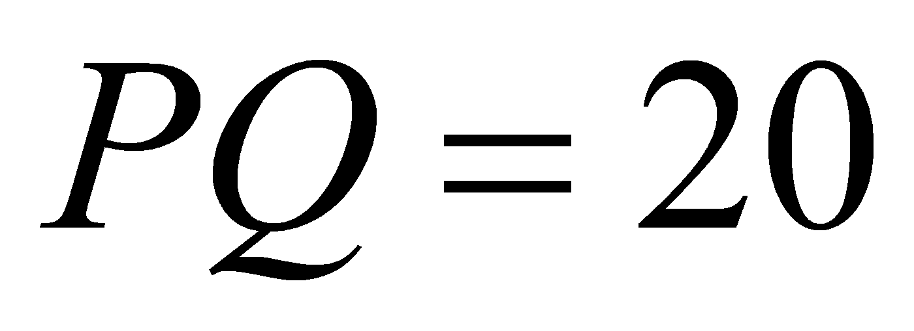
时，设运动时间为a秒，
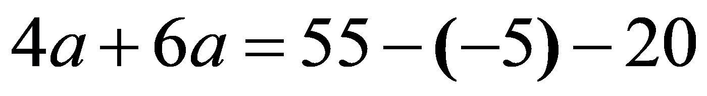
，解得： ，
，
因此Q点对应的数为
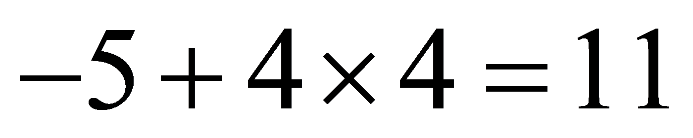
；②相遇后时，
设运动时间为b秒，
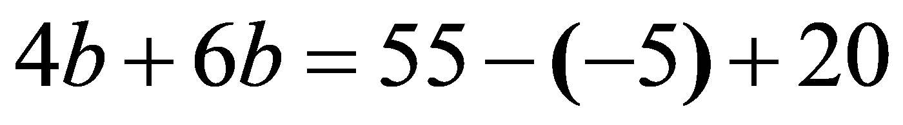
，解得： ，
，
因此Q点对应的数为
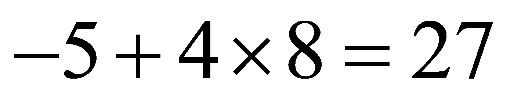
．Q点对应的数为11或27．
2．（24-25七年级上·吉林通化·期中）如图，点A、B是数轴上的两点，点B表示的数为5，且A、B两点之间的距离为15个单位长度，动点P、Q分别从A、B同时出发，点P以每秒3个单位长度的速度沿数轴向右运动，点Q以每秒2个单位长度的速度沿数轴向左运动，设运动时间为t秒．
(1)当点Q运动到点A时，求出t的值；
(2)直接用含t的代数式分别表示数轴上的点P、Q对应的数；
(3)求t为何值时，P、Q两点相遇，并求出此时P点对应的数；
(4)当点P、Q间的距离是点A、B间距离的 时，直接写出t的值．
时，直接写出t的值．
【答案】(1) 秒
秒
(2)点 对应的数为
对应的数为 ，点
，点 对应的数为
对应的数为
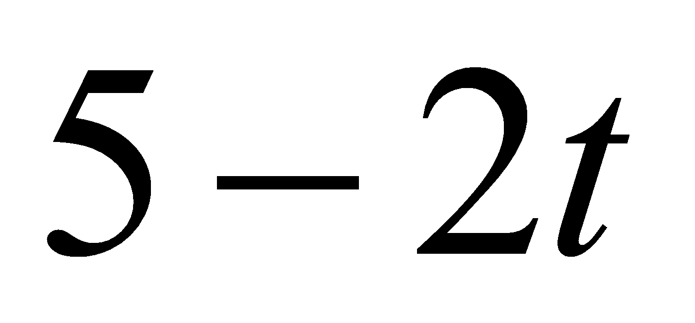
(3) 秒时、两点相遇，点对应的数为
秒时、两点相遇，点对应的数为
(4) 的值为
的值为 或
或
【分析】本题主要考查两点间的距离及一元一次方程的实际应用能力．
（1）根据路程÷速度=时间可得结果；
（2）向右运动的点P表示的数在 的基础上加上其运动路程，向左运动的点Q在5的基础上减去其运动的路程即可；
的基础上加上其运动路程，向左运动的点Q在5的基础上减去其运动的路程即可；
（3）根据“点P与点Q运动路程之和等于 ”列方程求解即可；
”列方程求解即可；
（4）根据两点间的距离及
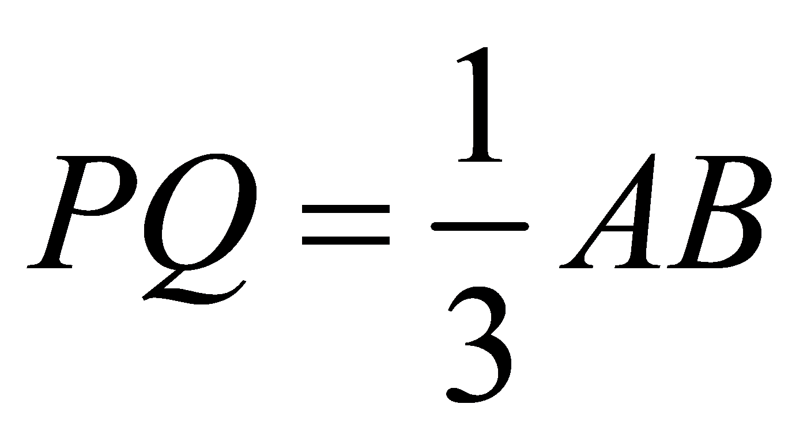
，列方程求解可得．【详解】（1）解：当点Q运动到点A时，
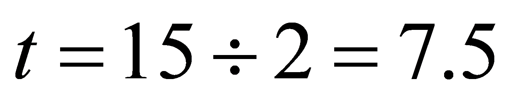
秒；（2）解：∵点B表示的数为5，且A、B两点之间的距离为15个单位长度，
∴点A表示的数为
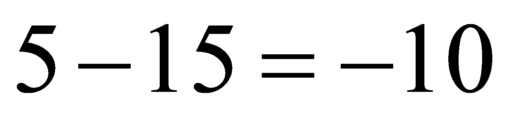
，∵动点P、Q分别从A、B同时出发，点P以每秒3个单位长度的速度沿数轴向右运动，点Q以每秒2个单位长度的速度沿数轴向左运动，
∴点P对应的数为，点Q对应的数为；
（3）解：根据题意，得
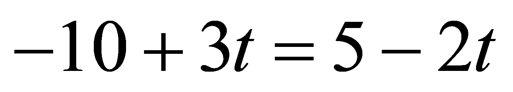
，解得 ，
，
此时点P对应的数为
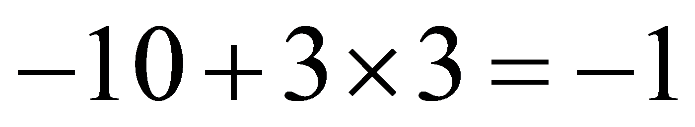
；（4）解：根据题意，得
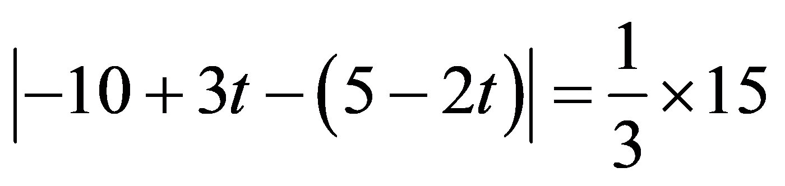
，解得
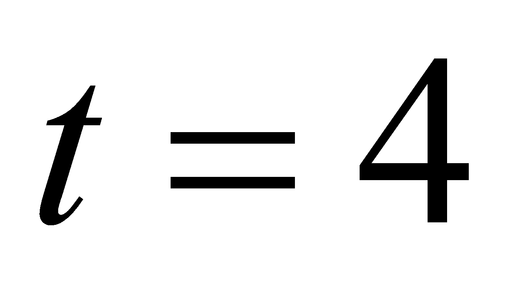
或 ，
，即当的值为或时，点P、Q间的距离是点A、B间距离的
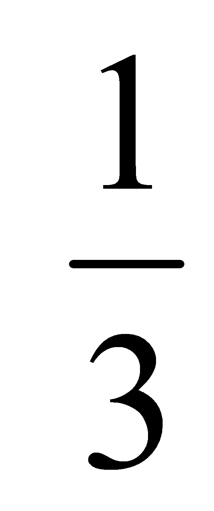
．3．（24-25七年级上·北京·期中）对于数轴上的点 ，给出如下定义：若在数轴上存在点P，使得点P到点B的距离是点B到点A距离的K倍（K为有理数），则称点B为点A的K倍关联点．
，给出如下定义：若在数轴上存在点P，使得点P到点B的距离是点B到点A距离的K倍（K为有理数），则称点B为点A的K倍关联点．
(1)当 时
时
①点A表示的数为2，点B表示的数为点3，点P位于原点O和点A之间，则点P表示的数为______．
②点P表示的数为2，点A表示的数为点3，则点B表示的数为_______．
(2)点A表示的数为t，点B表示的数为 ，点P位于点之间（可以与重合），直接写出K的取值范围．
，点P位于点之间（可以与重合），直接写出K的取值范围．
【答案】(1)① ②或
②或
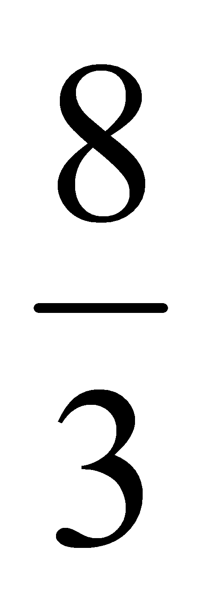
(2)
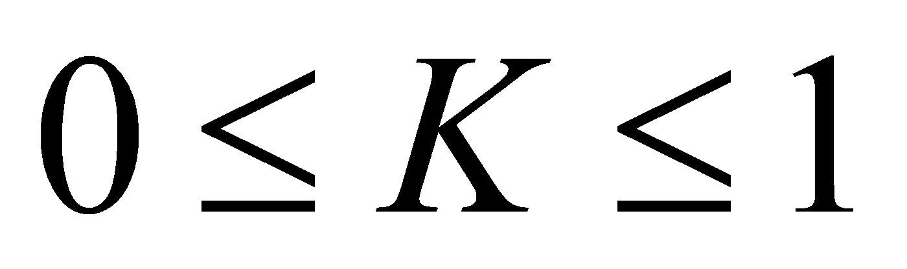
【分析】（1）①表示出的距离和 的距离，根据题意列式计算即可；
的距离，根据题意列式计算即可；
②表示出的距离和的距离，根据题意列方程计算即可；
（2）求出长，即可得到
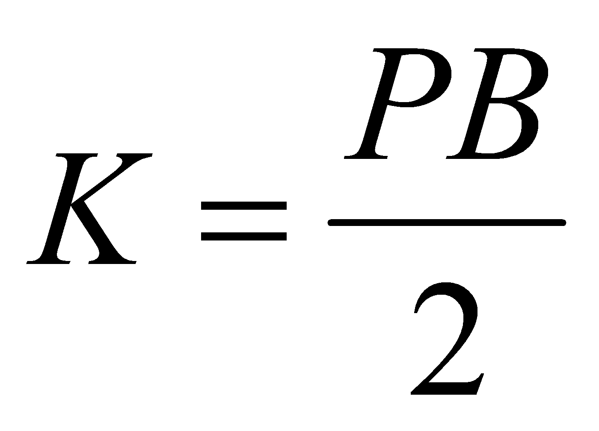
，然后根据点P的位置得到K的取值范围即可；本题主要考查运用数轴和距离进行列式计算，解题的关键是利用数形结合的方法进行求解．
【详解】（1）解：①设点表示的数为 ， 由题得：
， 由题得：
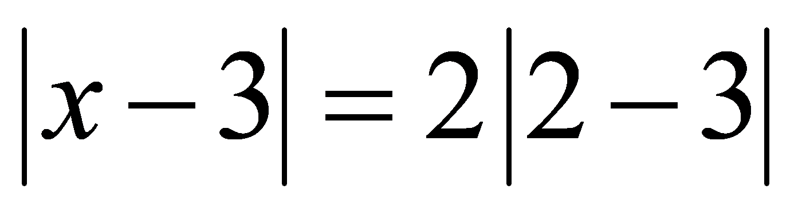
，∴ 或，
或，
∵点位于原点 和点
和点 之间，
之间，
∴ ，
，
即点表示的数为，
故答案为：；
②设点 表示的数为， 由题得：
表示的数为， 由题得：
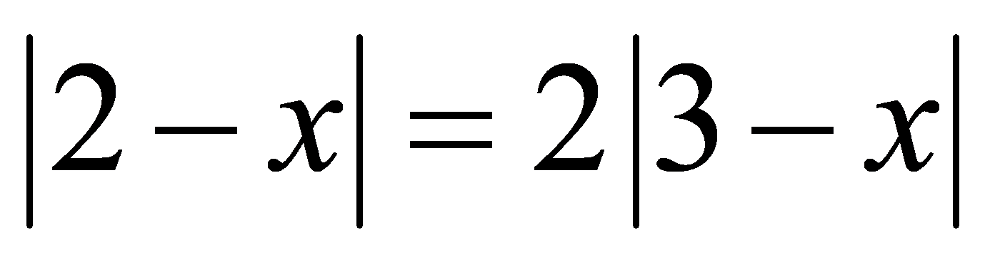
，∴
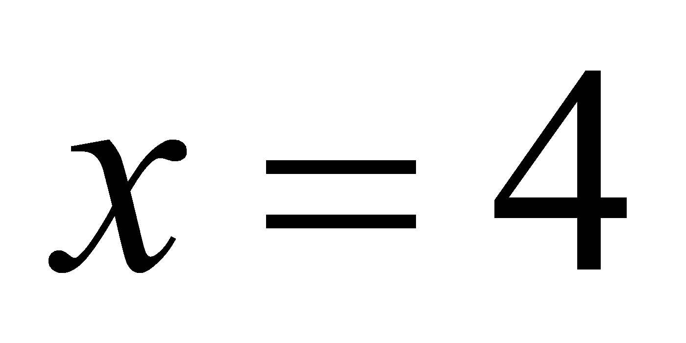
或 ，即点表示的数为或 ，
故答案为：或 ；
（2）解：∵点表示的数为，点表示的数为 ，
，
∴
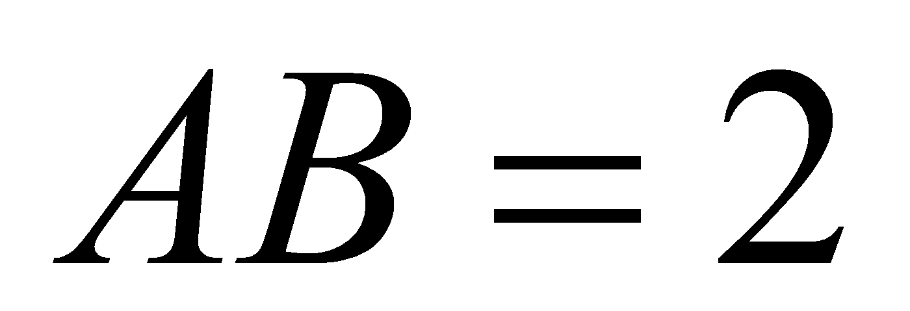
，∴，
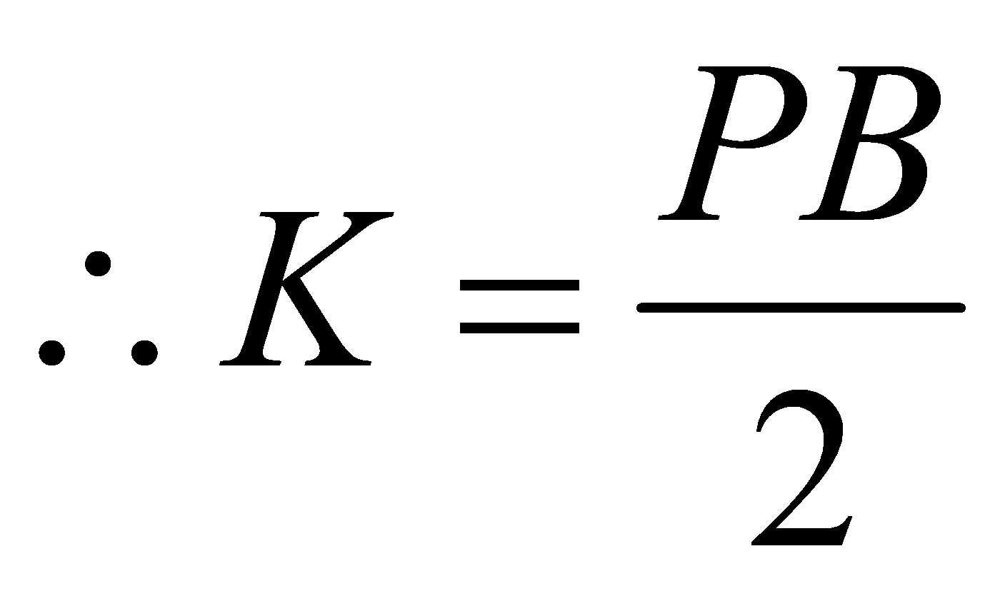
，∵在上，
∴
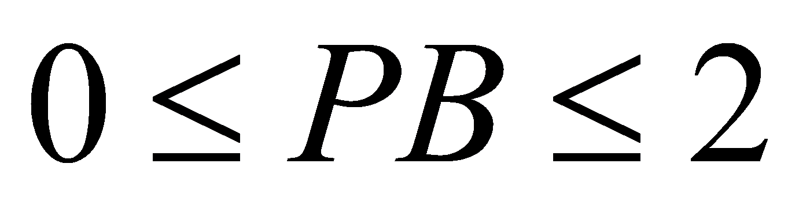
，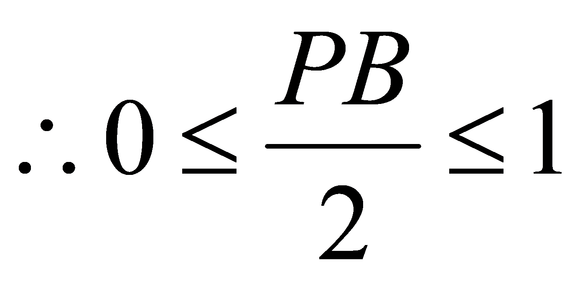
，∴．
题型二：数轴上的行程问题之相距问题
4．（24-25七年级上·河北张家口·期末）如图，A，B两点在数轴上对应数分别为 ，12，甲、乙分别从 A，B处同时出发，甲的速度为1个单位长度/秒，乙的速度为3个单位长度/秒，设运动的时间为t秒．
，12，甲、乙分别从 A，B处同时出发，甲的速度为1个单位长度/秒，乙的速度为3个单位长度/秒，设运动的时间为t秒．

(1) ；
；
(2)如果甲、乙相向运动 （甲向右运动，乙向左运动），记相遇点为 P，求点 P 表示的数及此时t的值；
(3)如果甲、乙都向左运动，当t为何值时，甲、乙之间恰好相距5个单位长度？
【答案】(1)
(2) ，
，
(3)或
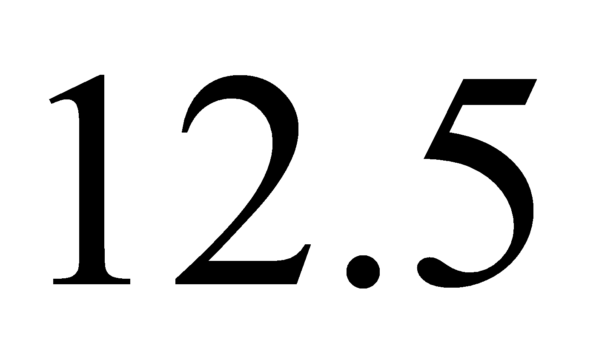
【分析】本题考查了数轴上两点间的距离，以及一元一次方程的应用，数形结合，找出等量关系是解答本题的关键．
（1）直接根据两点间的距离公式求解即可；
（2）根据相遇时甲和乙共走了20个单位的路程列方程求解即可；
（3）t秒时，甲在数轴上表示的数为
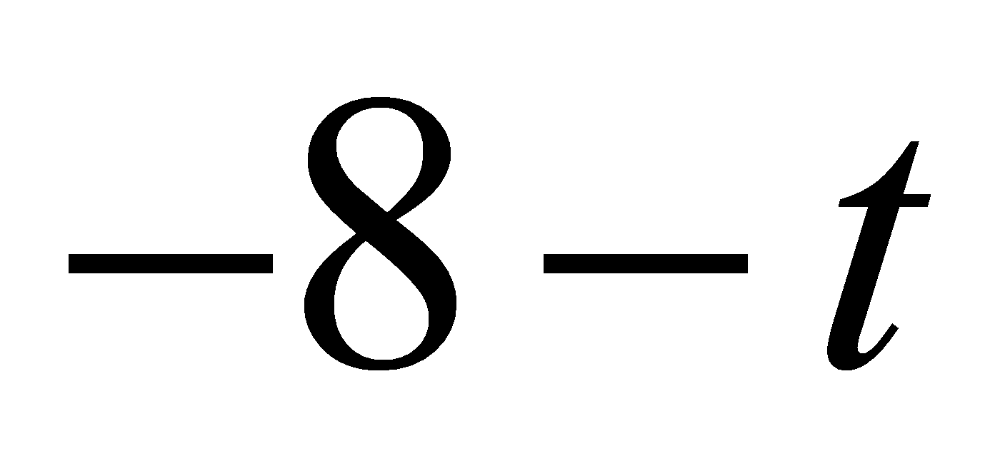
，乙在数轴上表示的数为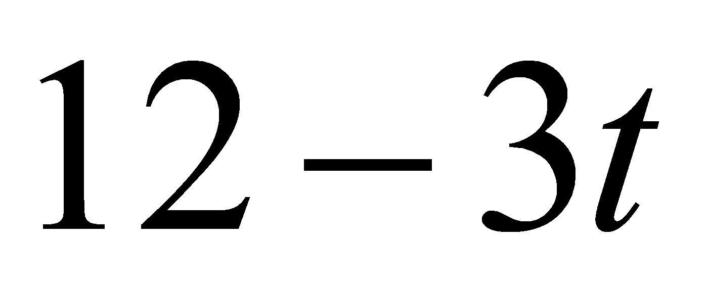
，根据甲、乙之间恰好相距5个单位长度得到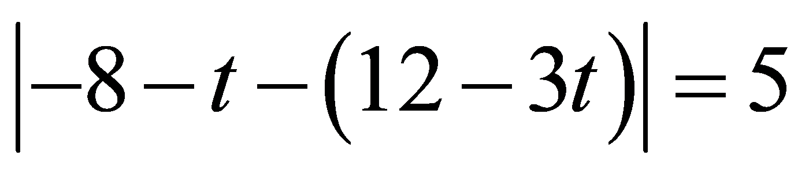
，求解即可．【详解】（1）解：∵A，B两点在数轴上对应的数分别为，12，
∴ ．
．
故答案为：20．
（2）解：∵甲的速度为1个单位长度/秒，乙的速度为3个单位长度/秒，设运动的时间为t秒，
∴
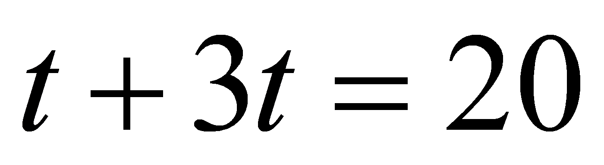
，∴，
∴点P表示的数为
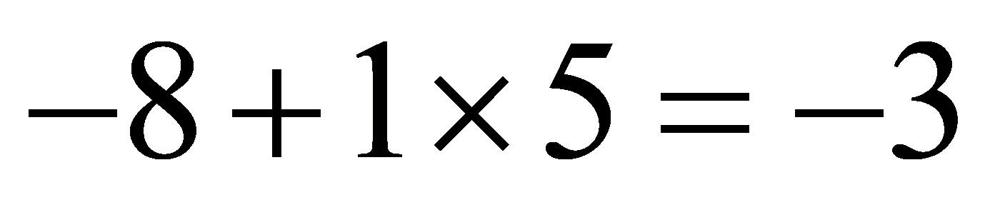
．（3）解：t秒时，甲在数轴上表示的数为，乙在数轴上表示的数为，
当甲、乙之间恰好相距5个单位长度时，
解得 或
或
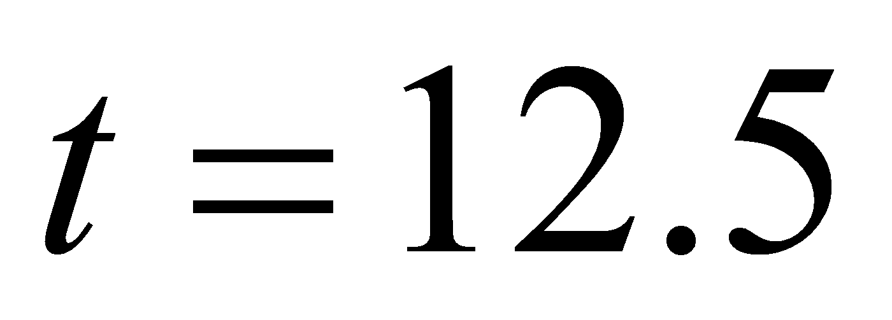
，∴当或时，甲、乙之间恰好相距5个单位长度．
5．（24-25七年级上·吉林·阶段练习）如图，已知数轴上点A表示的数为6，B是数轴上在点A左侧的一点，且A，B两点间的距离为10．动点P从点A出发，以每秒6个单位长度的速度沿数轴向左匀速运动，设运动时间为 秒．
秒．
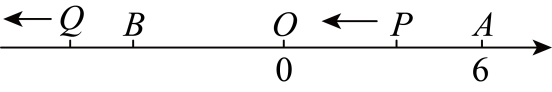
(1)数轴上点B表示的数是______；
(2)动点Q从点B出发，以每秒4个单位长度的速度沿数轴向左匀速运动，若点P，Q同时出发．求：
①当点P运动多少秒时，点P与点Q相遇？
②当点P运动多少秒时，点P与点Q间的距离为8个单位长度？
【答案】(1)
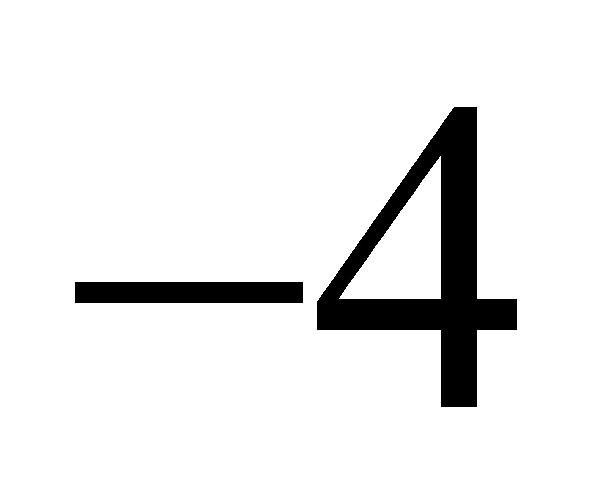
(2)①5秒；②运动1秒或9秒．
【分析】本题考查了数轴上两点间的距离和一元一次方程的应用，
（1）根据数轴上两点间的距离即可解答；
（2）①根据数轴上两点间的距离结合行程问题的特点列出方程求解；②根据数轴上两点间的距离结合行程问题的特点分情况列出方程求解．
【详解】（1）解：∵数轴上点A表示的数为6，
∴
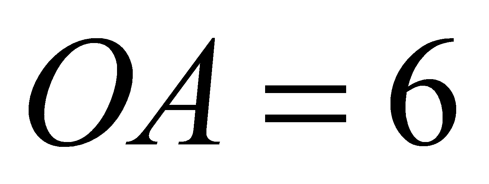
，则
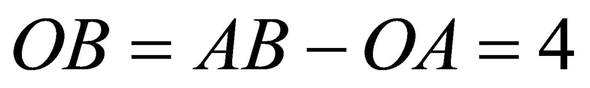
，∵点B在原点左边，
∴数轴上点B所表示的数为，
故答案为：；
（2）解：①点P运动t秒时追上点Q，
根据题意得 ，解得，
，解得，
答：当点P运动5秒时，点P与点Q相遇；
②当P不超过Q时，则
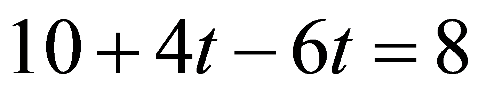
，解得 ；
；当P超过Q时，则
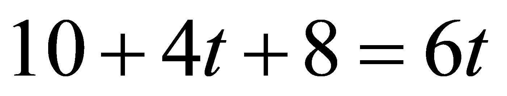
，解得 ；
；答：当点P运动1或9秒时，点P与点Q间的距离为8个单位长度．
6．（24-25七年级上·陕西宝鸡·期末）在数轴上原点表示数0，A点在原点的左侧，所表示的数是 ；点在原点的右侧，所表示的数是
；点在原点的右侧，所表示的数是 ，且，满足
，且，满足
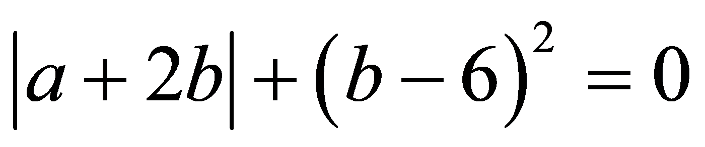
．(1)求、的值；
(2)点、是数轴上的两个动点，点从点A出发沿数轴向右运动，同时点从点出发沿数轴向右运动．且点的速度是点速度的2倍，经过6秒钟点与点相遇，求点与点的速度分别为每秒几个单位；
(3)若、两点同时以（2）中各自的速度相向而行，点从点A出发沿数轴向右运动，同时点从点出发沿数轴向左运动，且点运动到点后原速返回，当点到达点A时，、停止运动，经过几秒钟，、两点相距6个单位长度．
【答案】(1)
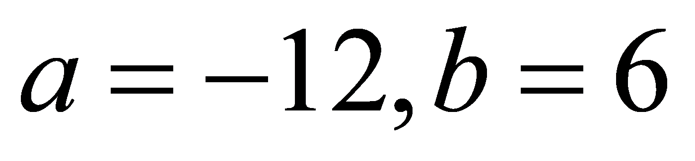
(2)点Q的速度为每秒3个单位，则点P的速度为每秒6个单位
(3)经过 秒或
秒或 秒或4秒钟，P、Q两点相距6个单位长度
秒或4秒钟，P、Q两点相距6个单位长度
【分析】（1）根据绝对值及偶次幂的非负性可进行求解；
（2）由题意得出方程组，解方程组即可；
（3）分两种情况进行讨论，由题意分别得出方程，解方程即可．
【详解】（1）解：∵，且
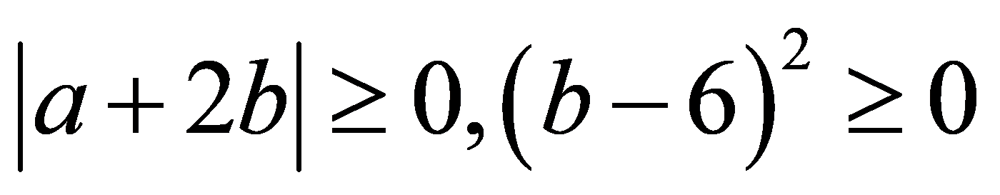
，∴
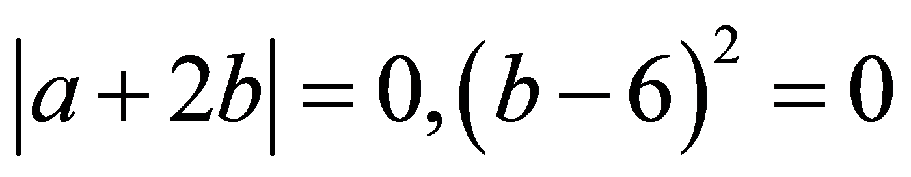
，∴；
（2）解：∵点P的速度是点Q速度的2倍，
设点Q的速度为每秒x个单位，则点P的速度为每秒 个单位，
个单位，
依题意，
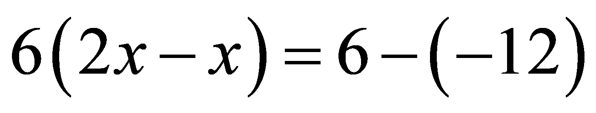
，解得：
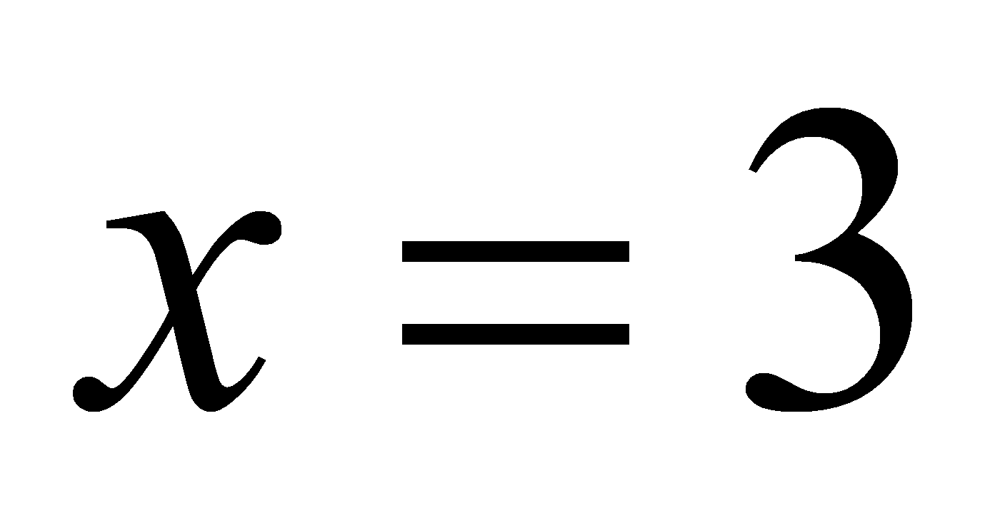
，答：点Q的速度为每秒3个单位，则点P的速度为每秒6个单位；
（3）解：A点所表示的数是 ；B点所表示的数是6；
；B点所表示的数是6；
∴ ，
，
当点Q到达点A时，需要
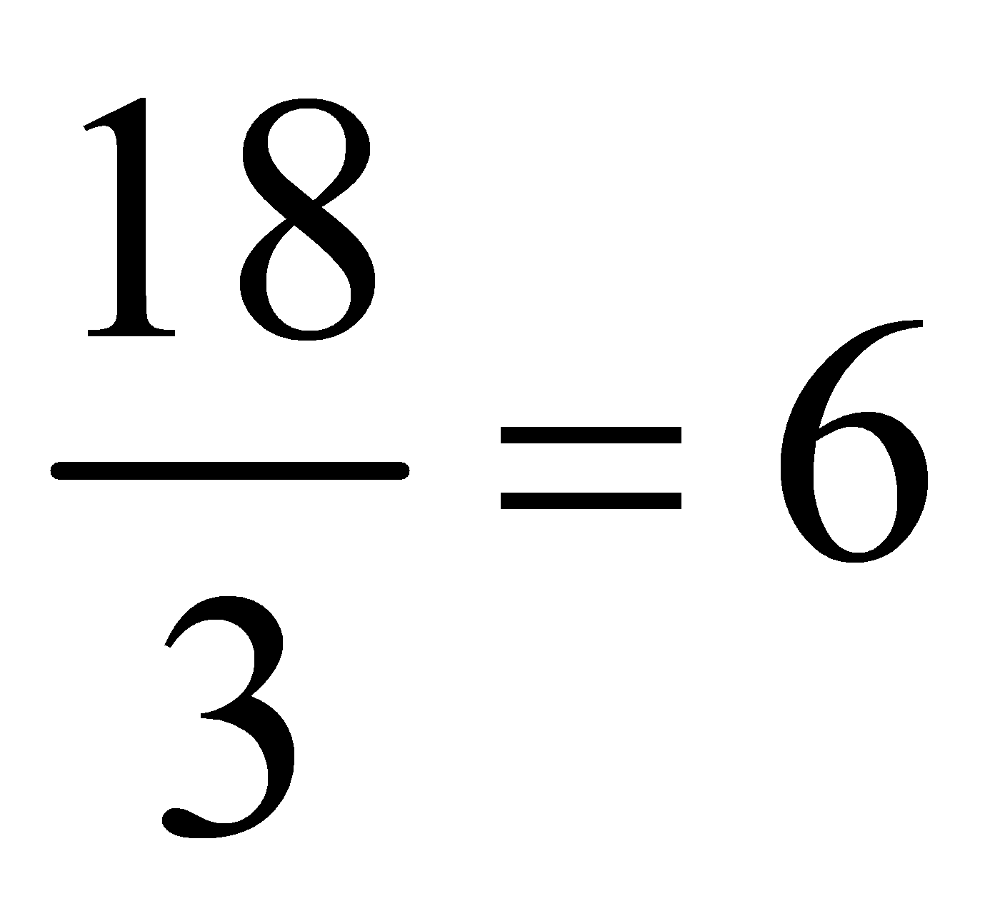
秒；设经过t秒钟，P、Q两点相距6个单位长度，
分情况讨论：
①点P没有到达B点，
当P、Q没有相遇，P、Q两点相距6个单位长度时，
由题意得：，
解得： ；
；
当P、Q相遇后，P、Q两点相距6个单位长度时，
由题意得：，
解得： ；
；
②点P到达B点后原速返回，
当点P还没有追上点Q时，
由题意得：，
解得：；
当点P超过点Q时，
由题意得：，
解得： （不合题意，舍去）；
（不合题意，舍去）；
综上所述，经过秒或秒或4秒钟，P、Q两点相距6个单位长度．
【点睛】本题考查了绝对值与偶次幂的非负性，数轴上两点距离，一元一次方程的应用、根据题意列出方程，分类讨论是解题的关键．
7．（24-25七年级上·广东惠州·期中）已知在数轴上点A表示的数为8，B在A点左侧，且A，B两点间的距离为14．动点P从点A出发，以每秒4个单位长度的速度沿数轴向左匀速运动，点Q从B点向右运动，速度为每秒2个单位，PQ同时出发，设运动时间为 秒．
秒．
(1)数轴上点B表示的数是______；当点P运动到的中点时，它所表示的数是______．
(2)动点Q从点B出发，以每秒2个单位长度的速度沿数轴向右匀速运动，求：
①当点P和点Q运动多少秒时，点P和点Q第一次相遇？
②当点P运动多少秒时，点P与点Q间的距离为6个单位长度？
【答案】(1) ，1
，1
(2)① 秒；②秒或秒
秒；②秒或秒
【分析】本题主要考查了数轴上两点距离计算，解决本题的关键是根据数轴上动点的运动情况列方程．
（1）先根据数轴上两点距离计算公式得到点BB表示的数，再根据两点中点计算公式求解即可；
（2）①根据相遇问题的等量关系，利用动点P的运动距离加上动点Q的运动距离等于A，B两点间的距离，列方程即可求解；
②根据点P与点Q相遇前和相遇后之间的距离为6个单位长度，分两种情况列方程即可求解．
【详解】（1）解∶∵数轴上点A表示的数为8，B在A点左侧，且A，B两点间的距离为14．
∴点B表示的数为，
当点P运动到的中点时，它所表示的数是 ，
，
故答案为∶，1；
（2）解∶①点P和点Q运动t秒时，点P和点Q第一次相遇，
则 ，
，
解得 ，
，
即点P和点Q运动秒时，点P和点Q第一次相遇；
②设点P运动t秒
根据题意得：
当点P与点Q相遇前，点P与点Q距离6个单位长度时，则 ，
，
解得；
当点P与点Q相遇后，点P与点Q距离6个单位长度时，则 ，
，
解得 ，
，
∴当点P运动秒或秒时，点P与点Q间的距离为6个单位长度．
8．（24-25七年级上·陕西宝鸡·期中）【问题情境】
如图2所示（下图），A，B两点在数轴上对应的数分别为，12，甲、乙分别从A，B处同时出发，甲的速度为1个单位长度/秒，乙的速度为3个单位长度/秒，设运动的时间为t秒．
(1)______．
(2)如果甲、乙相向运动（甲向右运动，乙向左运动），记相遇点为P，则点P表示的数为______，此时 ______．
______．
(3)如果甲、乙都向左运动，
①当为何值时，乙恰好追上甲？
②当为何值时，甲、乙之间恰好相距5个单位长度？
【答案】(1)20
(2)，5
(3)或
【分析】本题考查了数轴上两点间的距离，以及一元一次方程的应用，数形结合，找出等量关系是解答本题的关键．
（1）直接根据两点间的距离公式求解即可；
（2）根据相遇时甲和乙共走了20个单位的路程列方程求解即可；
（3）①根据乙追上甲时比甲多走了20个单位列方程求解即可；
②分两种情况求解：情况一，乙追上甲之前相距5个单位长度；情况二，乙追上甲之后相距5个单位长度，列式求解即可．
【详解】（1）解：∵A，B两点在数轴上对应的数分别为，12，
∴．
故答案为：20．
（2）解：∵甲的速度为1个单位长度/秒，乙的速度为3个单位长度/秒，设运动的时间为t秒，
∴，
∴，
∴点P表示的数为．
故答案为：，5；
（3）解：①根据题意得：，
解得 ；
；
②分两种情况，
情况一，乙追上甲之前相距5个单位长度，
此时有，
解得；
情况二，乙追上甲之后相距5个单位长度，
此时有，
解得，
综上所述，当或时，甲、乙之间恰好相距5个单位长度．
题型三：数轴上的行程问题之三点中点问题
9．（25-26七年级上·江苏南京·阶段练习）如图：在数轴上A点表示数a，B点表示数b，C点表示数c，b是最小的正整数，且a、c满足 ．
．
(1) ______，
______， ______，
______， ______；
______；
(2)若点A、点B和点C分别以每秒1个单位长度、4个单位长度和2个单位长度的速度在数轴上同时向右运动．
①假设t秒钟后，A，B，C三点中其中一点是另外两点的中点，求此时t的值；
②假设t秒钟后，用 表示A、B两点的距离，用
表示A、B两点的距离，用 表示A、C两点的距离，是否存在常数m，使
表示A、C两点的距离，是否存在常数m，使 的值为定值？若存在，求m的值，并写出该定值；若不存在，请说明理由．
的值为定值？若存在，求m的值，并写出该定值；若不存在，请说明理由．
【答案】(1) ；1；7
；1；7
(2)①t的值为 或15；②
或15；② ，的值为定值，其值为24．
，的值为定值，其值为24．
【分析】本题主要考查了一元一次方程的应用，整式加减的应用，数轴及两点间的距离，解题的关键是利用数轴的特点能求出两点间的距离．
（1）利用非负数的性质求得得a，c的值，由b是最小的正整数，可得 ；然后求出对称点，即可得出结果；
；然后求出对称点，即可得出结果；
（2）①分三种情况讨论：B为中点；C为中点，点A不可能是 的中点，由两点间的距离公式和线段中点的意义列出方程并解答即可；
的中点，由两点间的距离公式和线段中点的意义列出方程并解答即可；
②由，得到当时，求得的值为定值，其值为24．
【详解】（1）解：∵，
∴ ，，
，，
解得 ，，
，，
∵b是最小的正整数，
∴．
故答案是：；1；7．
（2）解：①∵，，，
t秒钟后，点A表示的数为：，
点B表示的数为：，
点C表示的数为：，
若B为中点：，
解得： ．
．
若C为中点：，
解得： ；
；
∵点A总是A、B、C中最左边那个点，
∴点A 不可能是的中点；
∴t的值为或15；
②∵，，
∴
，
若使的值为定值，则，即，
当时，
∴的值为定值，其值为24．
10．（24-25七年级上·四川成都·期末）已知数轴上的 两点分别对应的数字为
两点分别对应的数字为 ，且满足
，且满足 ，已知点
，已知点 是数轴上一动点，以每秒
是数轴上一动点，以每秒 个单位长度的速度沿数轴向右匀速运动，设运动时间为．
个单位长度的速度沿数轴向右匀速运动，设运动时间为．

(1)填空： _____，
_____， ______，的中点在数轴上对应的数是______．
______，的中点在数轴上对应的数是______．
(2)若动点从 出发，点
出发，点 从
从 点同时出发，且以每秒
点同时出发，且以每秒 个长度的速度向负方向运动，若点
个长度的速度向负方向运动，若点 中有一点是另外两点构成线段的中点，则此时三点就形成“美丽组”，求出点运动多少秒时，三点能形成“美丽组”？
中有一点是另外两点构成线段的中点，则此时三点就形成“美丽组”，求出点运动多少秒时，三点能形成“美丽组”？
(3)若点从出发秒后，点从点出发，且以每秒个长度的速度向负方向运动，点运动到中点后立即返回以同样的速度再沿数轴向左运动，当 时，求运动的时间
时，求运动的时间 ．
．
【答案】(1) ，
， ，
， ；
；
(2)点运动 秒或秒或
秒或秒或 秒时，三点能形成“美丽组”；
秒时，三点能形成“美丽组”；
(3)运动的时间为 秒或
秒或 秒．
秒．
【分析】本题考查了数轴，非负数的性质，一元一次方程的应用，掌握知识点的应用是解题的关键．
（）根据非负数的性质和中点公式求解即可；
（）根据三点能形成“美丽组”分当点为 的中点时，当点为的中点时，当点为
的中点时，当点为的中点时，当点为 的中点时三种情况分析列出方程即可求解；
的中点时三种情况分析列出方程即可求解；
（ ）分
）分 当没有到中点时，
当没有到中点时， 当到达中点后，然后根据列出方程即可求解．
当到达中点后，然后根据列出方程即可求解．
【详解】（1）解：∵，
∴，，
解得： ，
， ，
，
∴的中点在数轴上对应的数是，
故答案为：，，；
（2）解：点表示的数为：，点表示的数为：，
当点为的中点时：
解得： ；
；
当点为的中点时：，
解得：；
当点为的中点时：，
解得：；
答：点运动秒或秒或秒时，三点能形成“美丽组”；
（3）解：当没有到中点时，
当 时，点位于原点处，此时点在点处，
时，点位于原点处，此时点在点处，
设再经过 秒时，时，
秒时，时，
，
解得，
此时；
当到达中点后，时，此时点表示的数为，点表示的数为，
设再经过 秒时有，
秒时有，
则，
解得 ，
，
此时，
∴当运动秒时，，
当点继续每秒个单位长度的速度沿数轴向左运动，而点的速度为每秒个长度的速度向负方向运动，则，
综上可知：时，运动的时间为秒或秒．
11．（24-25七年级上·广东汕头·期末）已知数轴上点A表示的数为6，B是数轴上在A左侧的一点，且A，B两点间的距离为10．动点P从点A出发，以每秒4个单位长度的速度沿数轴向左匀速运动，设运动时间为 秒．
秒．

(1)数轴上点B表示的数是______；当点P运动到 的中点时，它所表示的数是______；
的中点时，它所表示的数是______；
(2)动点Q从点B出发，以每秒2个单位长度的速度沿数轴向左匀速运动，点P，Q同时出发．
①用含t的代数式表示：点P对应的数是______，点Q对应的数是______；
②如果P，B，Q中有一个点是另外两点所构成线段的中点，就称P，B，Q为一组“平衡点”．求出点P运动多少秒时，点P，B，Q能构成一组“平衡点”？
(3)若点P出发2秒后点Q再从点B出发，并以每秒2个单位长度的速度沿数轴向左匀速运动，运动至点 处加速，以每秒5个单位长度的速度继续向左运动．直接写出当t等于何值时，P，Q之间的距离为6．
处加速，以每秒5个单位长度的速度继续向左运动．直接写出当t等于何值时，P，Q之间的距离为6．
【答案】(1)，
(2)①，；② 或
或
(3)1或6或48或60
【分析】本题考查了数轴上两点间的距离和一元一次方程的应用，正确理解题意、灵活应用数形结合思想是解题的关键．
（1）根据数轴上两点间的距离即可解答；
（2）①直接利用点的运动写出对应的数即可；
②分点B为，点Q为 ，点为
，点为 的中点，根据数轴上两点间的距离结合行程问题的特点列出方程求解；
的中点，根据数轴上两点间的距离结合行程问题的特点列出方程求解；
（3）分和两种情况，根据数轴上两点间的距离结合行程问题的特点列出方程求解．
【详解】（1）解：∵点A表示的数为6，B 是数轴上在A 左侧的一点，且A，B两点间的距离为10．
∴设点 对应的数为
对应的数为 ，则有：
，则有：
，
解得， ；
；
设的贵点对应的数为 ，则：
，则：
，
故答案为：；1；
（2）解：①点P对应的，Q对应的数为，
故答案为：，；
②分三种情况：
a、如图，当点B为的中点时，则点P对应的，Q对应的数为
∴
∵，
解得，；
b、当为和中点时，如图，则点P对应的，Q对应的数为，
则，
∴，
解得： ；
c、当点Q为的中点时，如图，
∴，
∴
此时t不存在，
综上，t的值为或；
（3）解：
，
；
∴当时，点表示的数为；
当时，从 处以每秒5个单位的速度向左运动，则表示的数为；
处以每秒5个单位的速度向左运动，则表示的数为；
①当时，且点在点右侧时，
，
解得， ；
；
点在点左侧时，
∵，
∴，
解得， ；
；
②当时，∵，
∴，
整理得，，
或，
解得，或，
综上，t的值为1或6或48或60．
12．（24-25七年级上·河南郑州·期中）【阅读】：
通过学习我们知道， 的几何意义是：数轴上表示数的点到原点的距离．由于可以看作，那么的几何意义为数轴上表示数与
的几何意义是：数轴上表示数的点到原点的距离．由于可以看作，那么的几何意义为数轴上表示数与 的两点间的距离．这个结论还可以推广为：点在数轴上分别表示数
的两点间的距离．这个结论还可以推广为：点在数轴上分别表示数 ，那么之间的距离可表示为
，那么之间的距离可表示为 ．
．
【探索】：
（1）数轴上表示和 的两点之间的距离是_______．
的两点之间的距离是_______．
（2）若使所表示的点到表示和的点的距离之和为 ，所有符合条件的整数的和为
，所有符合条件的整数的和为 ．
．
【动手折一折】：
小博同学在草稿纸上画了一条数轴进行操作探究：
（3）折叠纸面，使表示的点和 表示的点重合，
表示的点重合，
① 表示的点和_______表示的点重合；
表示的点和_______表示的点重合；
②已知（ 在的左侧）两点之间的距离为
在的左侧）两点之间的距离为 ，且两点经折叠后重合，则点表示的数是，点表示的数是_______．
，且两点经折叠后重合，则点表示的数是，点表示的数是_______．
【拓展延伸】：
（4）动点 同时从
同时从 对应的点出发沿数轴向右运动，点，点的速度分别为个单位长度和个单位长度，是否存在某一时刻，使得原点这三个点中，有一个点恰为另外两点所连线段的中点？若存在，求出此时点所代表的数；若不存在，请说明理由．
对应的点出发沿数轴向右运动，点，点的速度分别为个单位长度和个单位长度，是否存在某一时刻，使得原点这三个点中，有一个点恰为另外两点所连线段的中点？若存在，求出此时点所代表的数；若不存在，请说明理由．
【答案】（1）；（2） ；（3）①
；（3）① ②，；（4）点对应的数为
②，；（4）点对应的数为 或
或
【分析】本题考查一元一次方程的应用，数轴上两点间的距离，掌握分类讨论的思想是解题的关键．
（1）根据数轴上两点间距离的求法解题即可；
（2）根据绝对值的几何意义可知时，，求出符合条件的整数即可；
（3）①利用中点坐标公式求出折痕点，再求解即可；
②设点表示的数是，则点表示的数是，根据中点坐标公式求出，即可求解；
（4）先表示出点对应的数为，点对应的数为，再分点 为，这两个点的中点；点为，这两个点的中点；点为，这两个点的中点时，三种情况讨论，列式计算即可求解．
为，这两个点的中点；点为，这两个点的中点；点为，这两个点的中点时，三种情况讨论，列式计算即可求解．
【详解】解：（1）表示和两点之间的距离是，
故答案为：；
（2） 使所表示的点到表示和的点的距离之和为，
使所表示的点到表示和的点的距离之和为，
 ，
，
，
是整数，
的值为，，，， ，，，，
，，，，
；
故答案为：；
（3）①表示的点和表示的点重合，
折叠的点表示的数是，
设则表示的点和表示的点重合，
，
解得 ，
，
表示的点和表示的点重合；
故答案为：；
②设点表示的数是，则点表示的数是，
，
解得，
，
点表示的数，点表示的数是，
故答案为：，；
（）由题意知，运动时间为秒，
则点对应的数为，点对应的数为，
当点为，这两个点的中点时，，
，解得 ；
；
此时，点对应的数为；
当点为，这两个点的中点时，，
，解得（舍去）；
当点为，这两个点的中点时，，
，解得；
此时，点对应的数为；
综上，点对应的数为或．
题型四：数轴上的行程问题之新定义型问题
13．（25-26七年级上·浙江嘉兴·期中）阅读理解：
对于数轴上的A，B，P三点，给出如下定义：若其中一个点到另外两个点的距离恰好满足3倍的数量关系，则称该点是另外两个点的“友好点”．
例如：如图，数轴上点A，B，P表示的数分别是1，2，5，此时称点B是点A，P的“友好点”．
知识运用：
(1)当点A表示数，点B表示数2时，下列各数：，，中，是A，B两点的“友好点”表示的数是_____．
(2)当点A表示数，点B表示数1时，点P是数轴上的一个动点．①若点P在点A，B之间，且点P是点A，B的“友好点”，求此时点P表示的数是多少？
②若点P在点B的右侧，当点A，B，P中，有一个点恰好是另外两点的“友好点”时，请你直接写出点P表示的数是_____．
【答案】(1)
(2)①点P表示的数是或；② 或
或 或
或 或
或
【分析】本题考查了数轴上两点之间的距离，一元一次方程的求解，解题的关键是理解“友好点”的定义，正确列出方程．
（1）根据“友好点”的定义，逐个判断即可；
（2）①设点P表示的数为，根据题意可得， ，根据“友好点”的定义，分两种情况求解即可；
，根据“友好点”的定义，分两种情况求解即可；
②分三种情况，点P是点A，B的“友好点”，点A是点P，B的“友好点”，点B是点P，A的“友好点”，列出方程，求解即可．
【详解】（1）解：点A表示数，点B表示数2，
则到，的距离分别为，，
满足“友好点”的定义；
到，的距离分别为， ，
，
不满足“友好点”的定义；
到，的距离分别为， ，
，
不满足“友好点”的定义；
则是A，B两点的“友好点”表示的数是，
故答案为：；
（2）解：①设点P表示的数为，
由点A表示数，点B表示数1，点P在点A，B之间，可得，
则点到，的距离分别为，，
由点P是点A，B的“友好点”可得，或，
解得， 或
或 ，
，
此时点P表示的数是或；
②设点P表示的数为，
由点A表示数，点B表示数1可得，
由点P在点B的右侧可得， ，
，
则点到，的距离分别为 ，
， ，
，
当点P是点A，B的“友好点”时， 可得，
解得 ；
；
当点A是点P，B的“友好点”时，可得，
解得 ；
；
当点B是点P，A的“友好点”时，可得或
解得 或；
或；
综上，点P表示的数是或或或；
故答案为：或或或．
14．（25-26七年级上·河北保定·阶段练习）知识应用：
随着祖国的日益强大，经济发展迅速，人民的生活越来越好，幸福指数也越来越高．老师在数学课上给出了定义：在数轴上，若点C到点A 的距离恰好是3，则称点C为点A的“幸福点”；若点C到点A，B的距离之和为6，则称点C为点A，B的“幸福中心”．
（1）若点 A 表示的数是4，则点A的“幸福点”点C 表示的数是
（2）已知点 M 表示的数是m，点N 表示的数是n，且则 ； ；
若点C为点 M，N的“幸福中心”，则点C表示的数可以是 (填一个满足要求的数即可)；
知识拓展：
（3）若点 A 表示的数是，点B 表示的数是3，点P 表示的数是8，一个电子蚂蚁Q从点P出发，以2单位/秒的速度沿数轴向左运动，若经过t秒电子蚂蚁Q 正好到达点A，B的“幸福中心”，求t的值．
（4）在（3）的条件下，在数轴上是否存在点C (点C与点B不重合)，使得电子蚂蚁Q既是A、B的“幸福中心”又是A、C的“幸福中心”?若存在，请直接写出点C表示的数，若不存在，请说明理由．
【答案】（1）或；（2），(答案不唯一)；（3）或秒；（4）或 ．
．
【分析】本题考查了一元一次方程的应用，数轴和两点间的距离，注意数轴的三要素：原点、正方向、单位长度；能够正确表示数轴上两点间的距离：两点所对应的数的差的绝对值.
（1）根据题中所给定义可直接进行求解；
（2）先求得再根据“幸福中心”的定义可直接进行求解；
（3）由题意可分两种情况列式：①点Q在点B和点P之间，②点Q在点A的左侧讨论； 进而分类求解即可；
（4）根据题意，结合数轴，在（3）的条件下，根据新定义得分类讨论，即可求解.
【详解】解：（1）由题意得：点的“幸福点” 表示的数为或
表示的数为或  ，
，
故答案为： 或；
（2）∵点表示的数是 ，点表示的数是
，点表示的数是 ，且，
，且，
，
∴点表示的数是，点表示的数是，
∴点、的距离为，
∵点为点, 的“幸福中心”，
∴点在点、之间,
即点表示的数可以是与3之间的数，
∴点表示的数可以是，
故答案为：，(答案不唯一)；
（3）由题意可得、之间的距离为，故有两种可能：
设经过秒点是、的“幸福中心”，则点表示的数为，
①点在点和点之间，则有：
解得：  ，
，
②点在点的左侧，则有
解得： ，
，
综上所述：当经过或秒时, 点是、的“幸福中心”；
（4）由（3）可得, 当时，点表示的数为 ，
，
∴，之间的距离为，
∵点是、的“幸福中心”，
，
∴点在点的右侧或左侧，
∴点表示的数是 或
或 （不合题意，舍去）；
（不合题意，舍去）；
当，点表示的数为，
∴，之间的距离为，
∵点是、的“幸福中心”,
，
∵则点在点的左侧或右侧，
∴点表示的数是或（不合题意，舍去）
综上所述，点表示的数为或．
15．（24-25七年级上·湖北武汉·阶段练习）【建立概念】如图，A、为数轴上不重合的两定点，点也在该数轴上，我们比较线段 和
和 的长度，将较短线段的长度定义为点到线段的“靠近距离”
的长度，将较短线段的长度定义为点到线段的“靠近距离” 特别地，若线段和的长度相等，则将线段或的长度定义为点到线段的“靠近距离”．
特别地，若线段和的长度相等，则将线段或的长度定义为点到线段的“靠近距离”．
【概念理解】如图，数轴的原点为，点A表示的数为，点表示的数为．
（1）点到线段的“靠近距离”为______；
（2）若数轴上有一个动点P，满足条件 ，求点P表示的数；
，求点P表示的数；
【拓展应用】
（3）如图，在数轴上，点表示的数为，A表示的数为，点表示的数为 点以每秒个单位长度的速度向正半轴方向移动时，点同时以每秒个单位长度的速度向负半轴方向移动设移动的时间为秒，当点到线段的“靠近距离”为时，求的值．
点以每秒个单位长度的速度向正半轴方向移动时，点同时以每秒个单位长度的速度向负半轴方向移动设移动的时间为秒，当点到线段的“靠近距离”为时，求的值．
【答案】（1）2；（2） 或6.5；（3）或
或6.5；（3）或 ．
．
【分析】（1）根据题意 的长度即为所求；
的长度即为所求；
（2）设点P表示的数为m，分三种情况进行讨论，①当时，得；②当时，点P不存在：③当时，得；
（3）分情况讨论，当时，得或（舍去），当时，得 （舍去）或．
（舍去）或．
【详解】解：（1）由题意，
∴点O到线段的“靠近距离”为2．
故答案为：2．
（2）设点P表示的数为m，
①当时，
，
∵，
∴，
解得，
点P表示；
②当时，
，
∴，
不合，点P不存在：
③当时，
，
∴，
解得，
点P表示6.5．
综上，点P表示或6.5．
（3）当时，
可得，或，
解得或，
而当时，
，
∴，
∴点P到线段的“靠近距离”为2，
不符合题意，
∴；
当时，
可得，或，
解得或，
而当时，
，
∴，
∴点P到线段的“靠近距离”为，不符合题意，
∴．
综上所述，或．
16．（25-26七年级上·安徽合肥·期中）【概念学习】
1．阅读绝对值拓展材料：点A，B在数轴上分别表示有理数a，b，A，B两点之间的距离表示为，在数轴上A，B两点之间的距离 ，例如：数轴上表示与的两点间的距离；而，则
，例如：数轴上表示与的两点间的距离；而，则 表示x与两点间的距离．
表示x与两点间的距离．

2．定义：点A，B，M为数轴上的任意三点（点M不与A，B重合），若点M到点A的距离是点M到点B的距离的x倍，则称点M是 的“x值点”，记作：．例如，点M表示的数为1，点A表示的数为，点B表示的数为3，此时
的“x值点”，记作：．例如，点M表示的数为1，点A表示的数为，点B表示的数为3，此时 ，，，则点M是的“2值点”，记作：
，，，则点M是的“2值点”，记作： ．
．

【初步认知】
（1）如图，点A，点B表示的数分别是和6；

①已知如图，两点的距离为 ，数轴上任意一点C表示的数为x，则两点的距离可以表示为 ．
②若点D，E表示的数分别是 ，3，则这两个点中是的“2值点”的点是 ；
，3，则这两个点中是的“2值点”的点是 ；
【深入思考】
（2）在数轴上，点F表示的数为，点G表示的数为10，从某时刻开始，若点P从原点O出发向右在数轴上做匀速直线运动，且点P的速度为1单位/秒，设运动时间为t秒，当 时，求出t的值；
时，求出t的值；
【答案】（1）①9，；②E；（2）或
【分析】本题考查了一元一次方程的应用，数轴上两点之间的距离、动点问题，根据新定义列出方程，认真理解新定义是解题的关键．
（1）①由两点之间的距离公式求解即可；
②求出两点之间距离，根据题中新定义再判断即可；
（2）由题意得出，，根据 ，得出，列出方程或，求解即可．
，得出，列出方程或，求解即可．
【详解】解：（1）①∵点，点表示的数分别是和6，
∴两点的距离为，
∵数轴上任意一点C表示的数为x，
∴两点的距离可以表示为，
故答案为：9，；
②∵点 ，
， 表示的数分别是，3，
表示的数分别是，3，
∴，，，故点不是的“2值点”，
，，，故点是的“2值点”；
故答案为：；
（2）由题意，，，
∵，
∴，
∴，
即或，
解得：或．
题型五：数轴上的行程问题之折线数轴问题
17．（24-25七年级上·江苏泰州·阶段练习）如图，将一条数轴在原点和点处各折一下，得到一条“折线数轴”．图中点表示，点表示，点表示 ，我们称点和点在数轴上相距
，我们称点和点在数轴上相距 个长度单位．动点从点出发，始终以2单位/秒的速度沿着“折线数轴”的正方向终点运动，同时，动点从原点出发，也沿着“折线数轴”的正方向朝终点运动，点在
个长度单位．动点从点出发，始终以2单位/秒的速度沿着“折线数轴”的正方向终点运动，同时，动点从原点出发，也沿着“折线数轴”的正方向朝终点运动，点在 线段以单位/秒的速度运动，在段以单位/秒的速度运动，设运动时间为秒．问：
线段以单位/秒的速度运动，在段以单位/秒的速度运动，设运动时间为秒．问：
(1)动点、谁先到达终点？请通过计算说明．
(2)、两点第一次相遇时，求出相遇点所对应的数是多少？
(3)当为______时，、两点在数轴上相距的长度为个单位？
【答案】(1)动点先到达终点，理由见解析
(2)
(3) 或
或 或
或
【分析】本题考查了数轴上的动点问题，解一元一次方程，根据题意列方程求解是解题的关键．
（1）分别求出到达所用时间，再比较即可得到答案；
（2）根据题意得到、两点在段第一次相遇，列方程求解即可；
（3）根据题意分情况讨论计算即可．
【详解】（1）解：动点的运动时间为秒，
动点的运动时间为秒，
，
动点先到达终点；
（2）解:秒，
，
、两点在段第一次相遇，
根据题意得，
解得 ，
，
，
相遇点所对应的数是；
（3）解：由（2）知秒时，第一次相遇，
则有，
解得 ；
；
当到达点时，运动了个单位，此时超过个单位，则在到达之前有一次相距个单位且在前面，
则，
解得；
在过追上之前又有一次相距个单位，
则，
解得；
假设超过之后又有一次相距个单位，
则有，
解得（不符合题意，舍去），
综上所述，当为或或时，、两点在数轴上相距的长度为个单位，
故答案为：或或
18．（24-25七年级上·河南·阶段练习）如图，将一条数轴在点B，点C，点D，点E处各折一下，得到“折线数轴”．图中点A 表示的数为 ，点B 表示的数为
，点B 表示的数为 ，点 C表示的数为，点D 表示的数为0，点E 表示的数为8，点F表示的数为12，动点P从点A出发，以每秒2个单位长度的速度沿着“折线数轴”的正方向移动，同时，动点Q从点F出发以每秒4个单位长度的速度沿着“折线数轴”的负方向移动，两个点上坡时的速度均是各自初始速度的一半，下坡时的速度均是各自初始速度的2倍，水平位置则保持初始速度不变．
，点 C表示的数为，点D 表示的数为0，点E 表示的数为8，点F表示的数为12，动点P从点A出发，以每秒2个单位长度的速度沿着“折线数轴”的正方向移动，同时，动点Q从点F出发以每秒4个单位长度的速度沿着“折线数轴”的负方向移动，两个点上坡时的速度均是各自初始速度的一半，下坡时的速度均是各自初始速度的2倍，水平位置则保持初始速度不变．

(1)动点P从点A运动到点F需要多少秒？
(2)P，Q两点在点M处相遇，求出相遇点M所对应的数是多少？
【答案】(1)20秒
(2)
【分析】本题主要考查数轴，有理数的运算，一元一次方程的应用，解题关键是读懂题意．
（1）分别求出动点P在每一段上运动的时间，再求和即可．
（2）先求出点Q从点F运动到点C，点P从点A运动到点B所用时间，可得到P、Q的相遇点M在段，设P、Q相遇时用时x秒，根据题意，列出方程，求出x的值，即可求解．
【详解】（1）解：由题意得，动点P在段的速度均为2个单位长度/秒，在段的速度为1个单位长度/秒，在 段的速度为4个单位长度/秒，，
段的速度为4个单位长度/秒，，
所以动点P从点A运动至点F需要的时间为（秒）
（2）点Q从点F运动到点C用时为（秒），
点P从点A运动到点B用时 （秒），
（秒），
当 时，点P在上，且距离点C：个单位长度，
时，点P在上，且距离点C：个单位长度，
所以P、Q的相遇点M在段，
设P、Q相遇时用时x秒，
，
解得：，
则点M所对应的数为．
19.（24-25七年级上·四川成都·阶段练习）如图，将一条数轴在原点O和点B处各折一下，得到一条“折线数轴”，图中，点A表示的数为 ，点B表示的数为10，点C表示为18，我们称点A和点C在该数轴上的“折线距离”为24个长度单位，动点P从点A出发，以1单位/秒的速度沿着“折线数轴”的正方向运动，从点O运动到点B期间速度变为原来的两倍，之后立刻恢复原速；同时，动点Q从点C出发，以2单位/秒的速度沿着折线数轴的负方向运动，从点B运动到点O期间速度变为原来的一半，之后也立刻恢复原速，设运动的时间为t秒，则：
，点B表示的数为10，点C表示为18，我们称点A和点C在该数轴上的“折线距离”为24个长度单位，动点P从点A出发，以1单位/秒的速度沿着“折线数轴”的正方向运动，从点O运动到点B期间速度变为原来的两倍，之后立刻恢复原速；同时，动点Q从点C出发，以2单位/秒的速度沿着折线数轴的负方向运动，从点B运动到点O期间速度变为原来的一半，之后也立刻恢复原速，设运动的时间为t秒，则：

(1)动点P从点A运动至点C需要______秒，动点Q从点C运动至点A需要_______秒；
(2)若P，Q两点在点M处相遇，求相遇时间t以及点M在折线数轴上所表示的数；
(3)是否存在t值，使得P、O两点在数轴上的“折线距离”与Q、B两点在数轴上的的“折线距离”相等．
【答案】(1)19，17；
(2)；点M在折线数轴上所表示的数是
(3)当 秒或
秒或 秒或
秒或  秒或17秒时，
秒或17秒时，
【知识点】行程问题(一元一次方程的应用)、用数轴上的点表示有理数、数轴上的动点问题
【分析】本题考查的是数轴上的动点问题，数轴上两点之间的距离，一元一次方程的应用，清晰的分类讨论是解本题的关键．
（1）利用路程除以速度求解即可得到答案；
（2）先判断相遇点M在 上，再根据题意列方程求解即可；
上，再根据题意列方程求解即可；
（3）分四种情况讨论：①当点P在 上，点Q在
上，点Q在 上时；②当点P在
上时；②当点P在 上时，点Q在上时；③当点P在上时，点Q在上时；④当点P在
上时，点Q在上时；③当点P在上时，点Q在上时；④当点P在 上时，点Q在上时，再列方程求解即可．
上时，点Q在上时，再列方程求解即可．
【详解】（1）解：动点P从点A运动至点O需要秒，
从点O运动至点B需要 秒，
秒，
从点B运动至点C需要秒，
则动点P从点A运动至点C需要 秒；
秒；
动点Q从点C运动至点B需要秒，
从点B运动至点O需要秒，
从点O运动至点A需要秒，
则动点Q从点C运动至点A需要秒；
故答案为：19，17；
（2）解：由（1）可得相遇点M在上，
∴由题意得 ，
，
解得，
∴，即点M在折线数轴上所表示的数是；
（3）解：①当点P在上，点Q在上时， ，
， ，
，
∵，
∴，
解得；
②当点P在上时，点Q在上时，，，
∵，
∴，
解得 ；
；
③当点P在上时，点Q在上时， ，，
，，
∵，
∴ ，
，
解得 ；
；
④当点P在上时，点Q在上时， ，，
，，
∵，
∴ ，
，
解得；
综上：当秒或秒或秒或17秒时．
20．（23-24六年级下·黑龙江哈尔滨·阶段练习）已知，如图，数轴上依次有 、
、 、
、 三点，它们在数轴上对应的数分别是
三点，它们在数轴上对应的数分别是 、
、 、
、 ，其中、满足
，其中、满足 ，点到点的距离为20．
，点到点的距离为20．

(1)求、、的值．
(2)如图1，动点 从点出发，以每秒2个单位长度的速度沿着数轴的正方向运动，动点
从点出发，以每秒2个单位长度的速度沿着数轴的正方向运动，动点 从点出发，以每秒1单位长度的速度沿着数轴的负方向运动，、两点同时出发，在点
从点出发，以每秒1单位长度的速度沿着数轴的负方向运动，、两点同时出发，在点 处相遇，求出相遇点所对应的数是多少；
处相遇，求出相遇点所对应的数是多少；
(3)如图2，将数轴在原点 和点处各折一下，得到一条“折线数轴”，（图中、两点在“折线数轴”上的距离为28个单位长度）．动点从点出发，以每秒2个单位长度的速度沿“折线数轴”的正方向运动，从点运动到点期间速度变为原来的一半，之后立刻恢复；同时，动点从点出发以每秒1个单位长度沿着“折线数轴”的负方向运动，从点运动到点期间速度变为原来的2倍，之后立刻恢复，设运动时间为
和点处各折一下，得到一条“折线数轴”，（图中、两点在“折线数轴”上的距离为28个单位长度）．动点从点出发，以每秒2个单位长度的速度沿“折线数轴”的正方向运动，从点运动到点期间速度变为原来的一半，之后立刻恢复；同时，动点从点出发以每秒1个单位长度沿着“折线数轴”的负方向运动，从点运动到点期间速度变为原来的2倍，之后立刻恢复，设运动时间为 秒，请直接写出当为何值时，、两点在“折线数轴”上的距离与、两点在“折线数轴”的距离相等．
秒，请直接写出当为何值时，、两点在“折线数轴”上的距离与、两点在“折线数轴”的距离相等．
【答案】(1) ；
； ；
；
(2)
(3)4，7，10，16
【知识点】数轴上两点之间的距离、数轴上的动点问题、绝对值非负性、行程问题(一元一次方程的应用)
【分析】（1）由题中条件，利用平方与绝对值非负性，结合非负式和为 的条件求解即可得到答案，再由数轴上两点之间距离表示方法即可得到答案；
的条件求解即可得到答案，再由数轴上两点之间距离表示方法即可得到答案；
（2）设相遇点所对应的数是 ，相遇时间为，由相遇问题列方程组求解即可得到答案；
，相遇时间为，由相遇问题列方程组求解即可得到答案；
（3）根据数轴上动点问题，分四种情况：当 不在线段上；当在线段上；当在线段上；当在线段上、在线段上；列方程求解即可得到答案．
不在线段上；当在线段上；当在线段上；当在线段上、在线段上；列方程求解即可得到答案．
【详解】（1）解： ，
，
 ，
，
解得，
、在数轴上对应的数分别是、，如图所示：
，
解得；
（2）解：设相遇点所对应的数是，相遇时间为，则
 ，解得，
，解得，
 相遇点所对应的数是；
相遇点所对应的数是；
（3）解：由（1）知；；，
， ，
，
动点从点出发，以每秒2个单位长度的速度沿“折线数轴”的正方向运动，从点运动到点期间速度变为原来的一半，
走完用时为 秒，走完用时
秒，走完用时 秒；
秒；
动点从点出发以每秒1个单位长度沿着“折线数轴”的负方向运动，从点运动到点期间速度变为原来的2倍，
走完用时为秒，走完用时 秒；
秒；
当不在线段上时，如图所示：
则由、两点在“折线数轴”上的距离与、两点在“折线数轴”的距离相等得到 ，解得
，解得 ；
；
当在线段上时，如图所示：
当在线段上时，如图所示：
则由、两点在“折线数轴”上的距离与、两点在“折线数轴”的距离相等得到 ，解得；
，解得；
当在线段上、在线段上时，如图所示：
则由、两点在“折线数轴”上的距离与、两点在“折线数轴”的距离相等得到，解得 ；
；
当为4或7或10或16时，、两点在“折线数轴”上的距离与、两点在“折线数轴”的距离相等．
【点睛】本题考查数轴综合问题，涉及数轴表示有理数、数轴上两点之间距离的表示方法、非负式和为零的条件、数轴上动点问题、相遇问题等知识，根据题意，数形结合列方程求解是解决问题的关键．